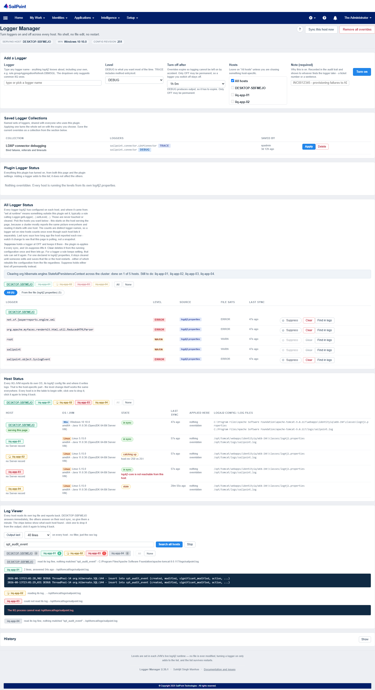
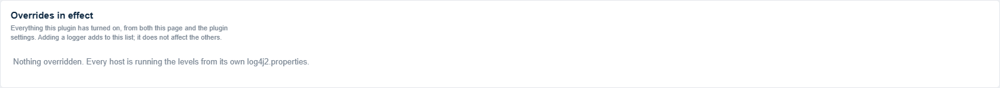
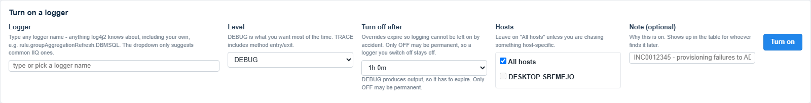
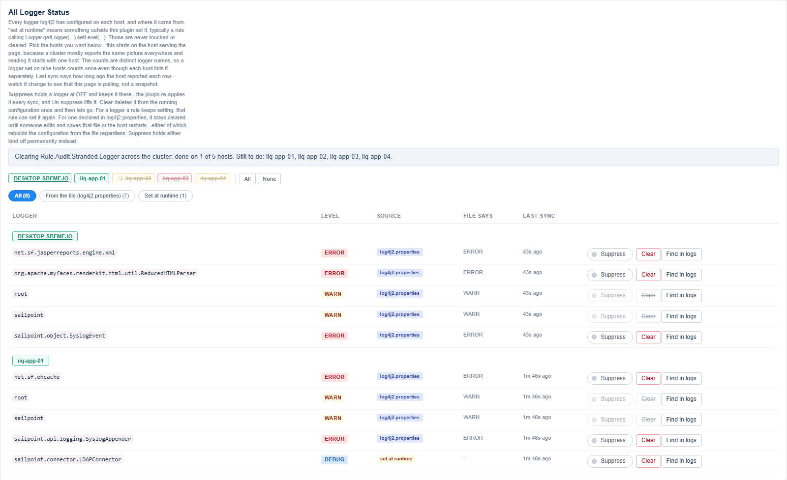
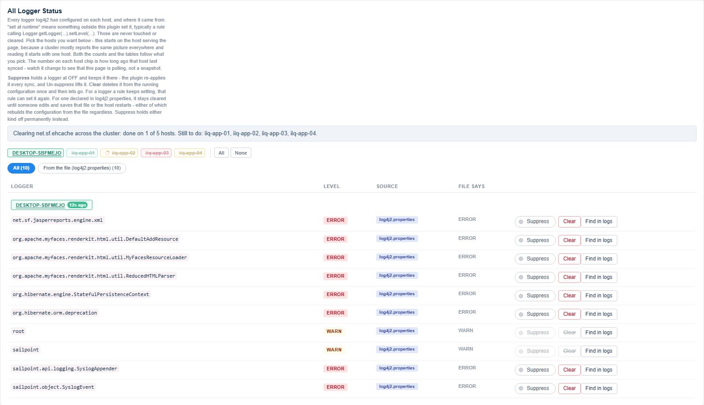
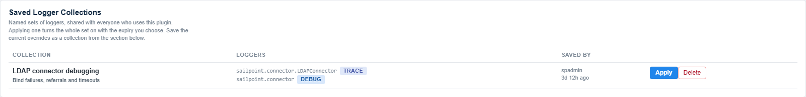
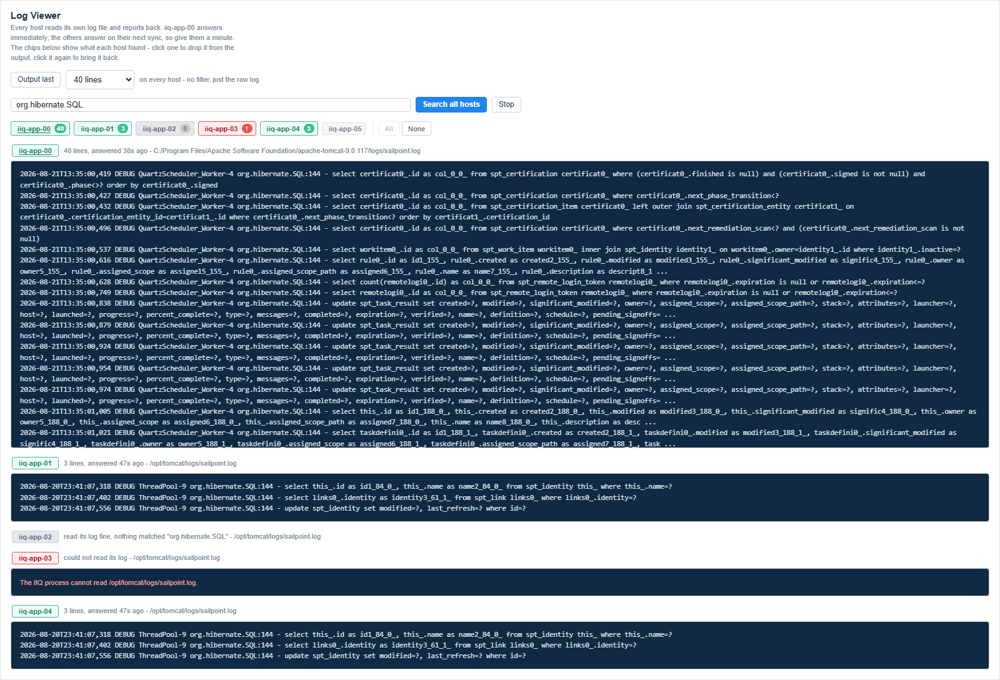
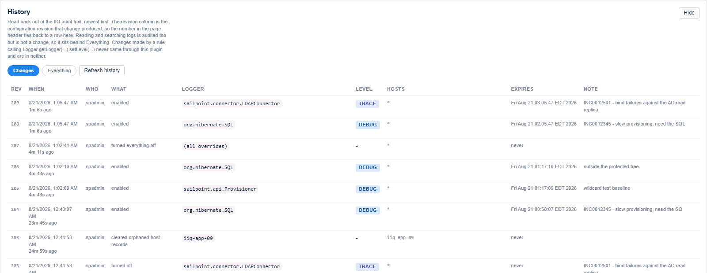
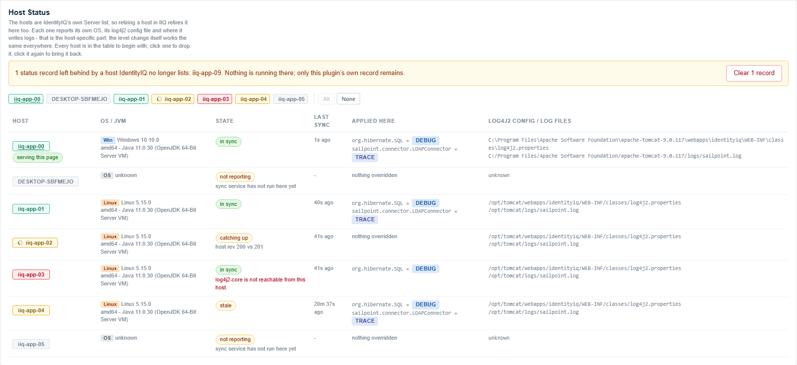

What this page doestop

Sets logger levels across every host in the deployment without shell access, without editing
log4j2.properties, and without a restart.
Levels are set in each JVM's live log4j2 runtime, so no file on any host is ever modified. The list of what should be on lives in the IIQ database, and every host reconciles itself against it on a timer - which is also how a host that restarts picks the overrides back up.
The sectionstop


- Add a Logger
- The form. Type any logger name - the dropdown is only a list of common IIQ
loggers and does not restrict what you can type. Custom loggers from your own rules work, for
example
rule.myCustomRule. - Plugin Logger Status
- Everything this plugin is currently holding, from this page and from the
Permanent loggersplugin setting. Every row is an override, and the only thing you can do to one is remove it. - All Logger Status
- Every logger log4j2 actually has configured on each host, whatever put it there, with its source stated. This is the truth of what is running.
- Host Status
- Every IIQ JVM: its OS, its JVM, which
log4j2.propertiesit loaded, where it writes logs, and when it last reconciled. - Log Viewer
- The log itself - the last N lines, or a search across every host. See Reading the log.
- History
- What has been changed through this plugin, newest first. Collapsed until you ask for it. See History.
Host chipstop
Three sections draw a row of host chips - All Logger Status, Host Status and Log Viewer. They look and behave the same everywhere, and every chip carries two independent things.
Colour is status
Colour always means "how is this host doing with respect to what this section is about". In All Logger Status and Host Status that is the host's own health:
- Green
- In sync.
- Amber, with a spinner
- Catching up - it has an older revision and will apply the current one on its next sync.
- Amber, no spinner
- Stale. It is reporting, but its last sync is old enough to distrust. Nothing is in flight; it has gone quiet.
- Red
- Not reporting at all, or reporting an error of its own. Hover for the reason.
In Log Viewer there is a query to answer, so the colour is what that host found instead - see the host chips under Reading the log.
Picked is separate from colour
Whether a chip is picked controls what appears below it. Not picked is faded and struck through, the same in every section. What differs is only where each section starts:
| Section | Starts with |
|---|---|
| All Logger Status | the host serving the page, on its own |
| Host Status | every host |
| Log Viewer | every host |
Click any chip to toggle it. You can pick as many as you like, and All / None at the end of the strip save clicking twelve of them individually. They only appear when there is more than one host. Loggers live in the JVM starts on one host because a cluster mostly reports the same picture everywhere, so reading it starts with one host and widens when you are comparing.
Picking several hosts there draws one table with a banner between each
host's rows, rather than a table each. Separate tables sized their columns to their own
content, so LEVEL landed somewhere different on every host - which defeats the
point, since comparing hosts means reading down a column. One table computes one geometry
from all the rows, stays fluid at any width, and scrolls inside its own box rather than
pushing the page sideways.

Where a logger came fromtop

| Source | Meaning | Cleared automatically? |
|---|---|---|
log4j2.properties | Declared in that host's own configuration file. | never |
this plugin | An override currently managed here. | on removal or expiry |
left over | This plugin created it and lost track of it, which used to happen when the plugin was reinstalled while a logger was on. | yes, by Clear all left over |
set at runtime | Something outside this plugin set it, typically a rule calling Logger.getLogger(...).setLevel(...). | never |
The buttonstop
- Turn on
- Creates an override at the level you choose. A note is required - a ticket number or a sentence. It goes into the audit event and is shown to whoever finds the logger later, because "who turned this on" is answerable afterwards but "why" is not unless someone was made to say so at the time.
- Suppress (a toggle)
- Holds a logger at
OFFand keeps it there. The plugin re-applies it on every sync, so it stays off even if a rule keeps switching it back on. Green with a filled dot means it is holding right now; click it again to lift it. - Clear
- Deletes the logger from the running configuration once, then lets go. Nothing is enforced
afterwards, so whatever created it can create it again. It is a cluster-wide request: the host you
are on does it immediately and the others follow on their next sync, which the page shows while it
is in flight. Available on a
log4j2.propertieslogger too - see Clearing a file-declared logger. - Remove override
- Deletes one of this plugin's overrides. The logger returns to its
log4j2.propertieslevel, or to whatever a rule sets, next time that rule runs. - Remove all overrides
- Removes every override this plugin holds, on every host. Nothing in
log4j2.propertiesis changed, loggers set at runtime are not touched, and the plugin stays enabled. - Clear all left over
- Clears only loggers this plugin created and lost track of. It can never remove something a rule or the file set.
- Sync this host now
- Reconciles the host serving this page immediately. Every other host reconciles itself on its own timer, so there is nothing to force there - watch Last sync in the Host Status table.
Suppress versus Cleartop
Suppress holds it. Clear deletes it and lets go.
| Suppress | Clear | |
|---|---|---|
| The logger entry | stays, held at OFF | deleted |
| Enforced afterwards? | yes, every sync | no |
| Survives a rule re-setting it? | yes | no, it comes back |
| Reversible? | yes, click the toggle again | nothing to reverse |
Suppress a logger a rule sets and it stays quiet: the rule runs, sets DEBUG again,
and the plugin puts it back to OFF within a minute. Clear the same logger and it is
quiet only until that rule next runs.
Clearing a file-declared loggertop
Clear is available on a log4j2.properties-sourced row too, not just a
runtime or left over one. It used to be disabled there, on the reasoning that the
file would simply put the logger back - which turned out to be wrong about when.
log4j2 only rebuilds its configuration from the file when the file's own timestamp changes
(monitorInterval watches for an edit-and-save, not the passage of time) or when the
host restarts. Neither happens on its own, so a file-declared logger cleared this way stays cleared
exactly as long as a rule-set one does - it is the same one-shot action either way, not a special
case.
What is still true: it is the host's declared configuration, so if someone edits
log4j2.properties or the JVM restarts, it comes back exactly as declared, with nothing
this plugin can do about it. If you need it held at OFF across a restart rather than
just until one happens, use Suppress instead - that is enforced every sync, a Clear is not enforced
at all after it runs.
The automatic Clear all left over sweep is unaffected by this: it still only ever removes loggers this plugin itself created and lost track of, never anything declared in the file. This applies only to Clear on one named row, which is a person looking at that row and asking for it - a different amount of trust than an automatic sweep running with nobody watching.
Saved Logger Collectionstop

A collection is a named set of loggers and levels, shared with everyone who uses the plugin - not a private favourites list. The point is that whoever worked out which five loggers matter for an LDAP bind failure can leave that where the next person finds it.
Turn the loggers on, then press Save as collection on Overrides in
effect. Applying one asks how long it should stay on and turns the whole set on across every
host; each override it creates is noted from collection: <name>, so the table and
the audit trail both say where it came from. Deleting a collection removes it for everyone and does
not touch any logger that is currently on.
Reading the logtop

Having turned a logger on, the next question is where to read it.
Two things you can ask for, both across every host:
- Output last N lines
- The raw end of every host's log, with no filter and no search term needed - for when a search finds nothing and you just want to see what a host is actually writing. 20, 40 or 100 lines. Leaving the search box blank and pressing Search all hosts does the same thing.
- Search all hosts
- Lines matching some text - a logger name, an identity, an error.
Stop ends either one.
There is also a Find in logs button on every row of Loggers live in the
JVM. Turning a logger on and then reading what it wrote are the same errand, so the row that
shows the logger running will start the search for you. It searches for the last four components of
the logger name, because IIQ's stock pattern prints loggers as %c{4} and the full name
would match nothing.
The host chips
Every host has a chip from the moment the panel is open, whether or not anything has been asked yet. The chips carry two independent things.
Colour is status - what that host did with the request:
- Grey, no count
- Nothing has been asked yet.
- Amber, with a spinner
- Asked, still reading. It answers on its next sync.
- Green, with a count
- Answered, and it found that many lines.
- Grey, with a zero
- Answered, read its log fine, matched nothing. This is not an error - on a cluster search most hosts legitimately match nothing, and which hosts those are is usually the finding.
- Red
- Could not read its log, or is not reporting at all. Hover for the reason.
Struck through is selection - whether that host is in the output below. Click a chip to drop it, click it again to bring it back. On a thirteen-host cluster, stacking every host's output buries the one you care about, so narrow it down to the hosts you are working on.
The narrowing survives the next query. Pick your three hosts once, then run a tail, then a search, then another search - the chips keep their colours up to date and keep your selection.
Only files that host's own log4j2 configuration writes to are offered, and the request picks one by index into that list rather than by path - there is no path parameter, so it cannot be pointed anywhere else. That is also why a mixed Windows, Linux and macOS cluster needs nothing special: the path is whatever that host's configuration says, in that host's own syntax.
Reads come from the end of the file with a seek, so a multi-gigabyte log costs the same as a
small one, are capped by the logTailKb setting (and 512KB regardless), and every read
is audited. Set showLogFiles to false to remove the panel entirely.
Searching every host
No host can read another one's disk, so this does not fetch anything remotely. The text is recorded once, and every host looks in its own log on its next sync and publishes what it found. The host serving the page answers immediately; the rest arrive within one interval, and each result says how long ago that host answered.
Each host reports up to 40 matching lines from the last 256KB of its file, with long lines truncated, because the result travels through the database rather than a stream. The search stops being answered after fifteen minutes, so hosts are not left scanning forever, and Stop ends it immediately.
Find in logs on any override runs this search for that logger's name - which is the next question every time you turn one on.
A worked example
Provisioning to AD is failing for one identity.
- Turn on
sailpoint.api.ProvisioneratDEBUGfor 15 minutes, with the note INC0012345 - AD provisioning failures. The note is required and goes into the audit event. - Reproduce the failure.
- Press Find in logs on that override, or type the identity name and choose All hosts.
- Each host reports its matching lines. Click through the host chips to find the one that handled the request - the others will show nothing.
Historytop

Collapsed until you press Show, because it is a look-back rather than something you need in front of you while working. It is not fetched until you open it, and not re-fetched by the page's own refresh.
The Rev column is the configuration revision that change produced. That is what makes the counter in the page header mean something: revision 131 on its own only tells hosts whether they are up to date, but matched against a row here it tells you what happened. Rows recorded before this column existed show a dash rather than a made-up number.
Changes is the default. Reading and searching logs is audited too - that is deliberate, someone read production logs - but they are not changes, and a busy afternoon of searching would bury the one override you are looking for. Everything includes them.
This is read straight back out of the IIQ audit trail. There is no second copy kept for the
page's convenience, which means what you see here is exactly what an auditor sees in Audit
Search under the Logger Manager change action, and it survives the plugin being
uninstalled. It also means the panel inherits the trail's one blind spot: a rule calling
Logger.getLogger(...).setLevel(...) never came through this plugin, so it is not
here. All Logger Status is where you see those, tagged set at runtime.
The panel shows the most recent 50. Older changes are still in the trail - search Audit Search for the action by name.
Levels and expirytop
Overrides expire so logging cannot be left on by accident, which is the usual way a tool like this causes an incident.
- Anything that produces output
- Must expire, up to the
Maximum TTLplugin setting - 24 hours by default. OFF- May be permanent. A logger switched off cannot fill a disk, so it is allowed to stay off. This is what Suppress uses.
root- Blocked unless
Allow root loggeris enabled in the plugin settings. Setting root toDEBUGturns on every logger in the JVM at once.
Host Status and propagationtop

The host serving your click applies the change immediately. Every other host picks it up on its next sync - 60 seconds by default. Hosts reporting an identical picture are grouped in the tables, so the one host that differs stands out instead of being buried under repeats.
A mixed Windows, Linux, macOS or container cluster needs no special handling: the level change is the same log4j2 call everywhere. What differs per host - the OS, the config file path, where the logs are written - is reported in the Host Status table rather than acted on.
Audittop
Every button press is recorded as an IIQ audit event under the action
LoggerManagerChange: who, what happened, the logger, level, target hosts, expiry, and
the note you typed.
To find them: Advanced Analytics, Search Type Audit, then refine on Action equals Logger Manager change. Filtering by Source needs your IIQ login name, not the display name shown in the header.
The page's own background refresh is not audited: it polls every ten seconds and would bury the actions that matter.
Plugin settingstop
- Enabled
- Master switch. Off means every host reverts to its own
log4j2.propertieson its next sync, without losing the stored configuration. - Required capability
- Capability needed to view or change anything here. No SysAdmin bypass - the check is exactly this capability name.
- Default TTL / Maximum TTL
- Preselected and maximum lifetime for a new override. Set Maximum to 0 to allow permanent overrides at any level.
- Allow root logger
- Whether the root logger may be targeted at all.
- Permanent loggers
- Loggers enabled from the settings page with no expiry. They appear in Plugin Logger Status marked from settings and can only be changed there.
- Untouchable loggers
- Comma-separated,
root,sailpointby default. Their Suppress and Clear controls are shown but disabled, so it is clear the action exists and is being refused rather than missing. Enforced by the API as well as the page, so it holds for anything calling the REST endpoints directly. - Show log files
- Whether Log Viewer appears at all. Off removes the panel and with it any ability to read logs from this page.
- Log tail KB
- How much of the end of a file a single read looks at, 64 KB by default. Capped at 512 KB whatever this is set to, since the result travels through the database.
If something looks wrongtop
- A host says "not reporting"
- Its sync service has not run. Check that host's
sailpoint.logforUnable to install service. - A host says "catching up"
- It is on an older revision than the configuration. Normal for up to one interval after a change.
- The level changed but nothing appears in the log
- The message still has to reach an appender. Check that host's log file paths in the Hosts table - on a stock IIQ install the file appender is commented out and everything goes to stdout.
- A logger is noisy and nobody here turned it on
- Read the Source column in All Logger Status. File
says shows what
log4j2.propertiesdeclares; differs from file means something changed it at runtime.
Limitationstop
Appenders are not managed, only levels - where a logger writes is still
log4j2.properties' business.
Uninstalling the plugin leaves its ServiceDefinition behind, because IIQ has no uninstall-time
import hook. Remove it with the iiq console:
delete ServiceDefinition TurnOnLoggersSync.
Only the properties format of log4j2 configuration is parsed. For an XML or YAML configuration the source of each logger cannot be determined, and the page says so.